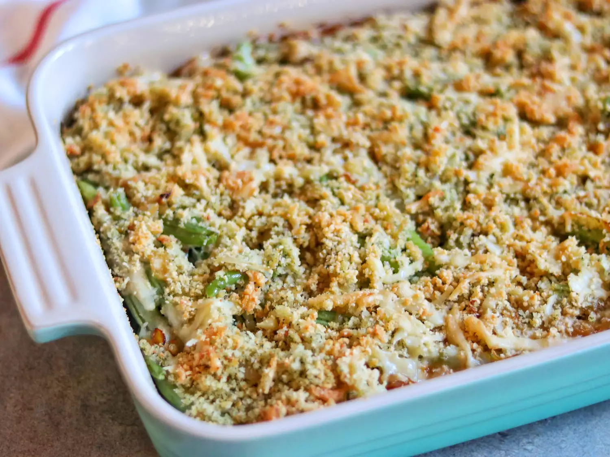

A classic green bean casserole is elevated with some of my favorite flavors from French onion soup — caramelized onions and Gruyère cheese.
Step 1
Preheat the oven to 375 degrees F (190 degrees C). Grease a 9x13-inch casserole dish.
Step 2
Heat 2 tablespoons of butter in a large skillet over medium heat. Stir onions into the pan; cook and stir until very soft and golden brown, about 15 minutes. Stir in sherry vinegar. Transfer to a small bowl, and reserve.
Step 3
In the same skillet, melt 2 more tablespoons butter. Whisk in 2 tablespoons flour. Stirring constantly, cook over medium heat until flour smells like baked pie crust, about 3 minutes. Slowly whisk in milk, about 1/2 cup at a time, then whisk in nutmeg, cayenne pepper, and thyme. Bring to a simmer, and cook until thickened, whisking constantly, 3 more minutes. Transfer to a bowl and reserve.
Step 4
Melt remaining 2 tablespoons butter in clean skillet; stir in panko until all crumbs are coated; reserve.
Step 5
Bring a large saucepan of salted water to a boil over medium heat, and boil beans until bright green and crisp but not raw tasting, 3 to 4 minutes. Drain very well.
Step 6
Spoon half of the caramelized onions into the prepared casserole dish; top with green beans. Season with salt and black pepper. Spread reserved white sauce over the green beans; sprinkle with half of the Gruyere cheese. Top with the rest of the onions, and use the back of a spoon to push onions down into sauce and cheese. Top with the buttered panko crumbs, the remaining Gruyere, and Parmesan cheese.
Step 7
Bake in the preheated oven until hot throughout and lightly browned, about 30 minutes. Let sit 10 minutes before serving.
Per Serving
Calories
Fat
Carbs
Protein